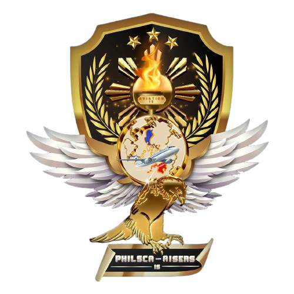
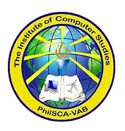
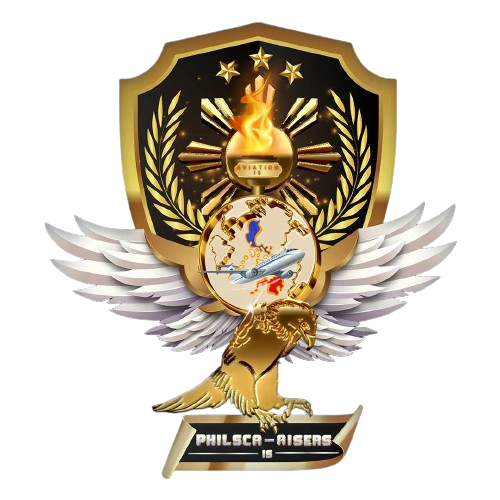
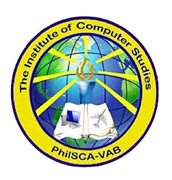

Welcome to the AISERS Organization Webpage!
This is the official webpage of the AISERS Organization, a student organization of the Philippine State College of Aeronautics (PHILSCA).
PhilSCA Vision Statement
PhilSCA is a leading professional aviation education institution with a balanced liberal arts and technology
PhilSCA Mission Statement
PhilSCA continuously produces industry-ready and world-class graduates through quality instruction, research, extension, resource management and linkages
PhilSCA Core Values